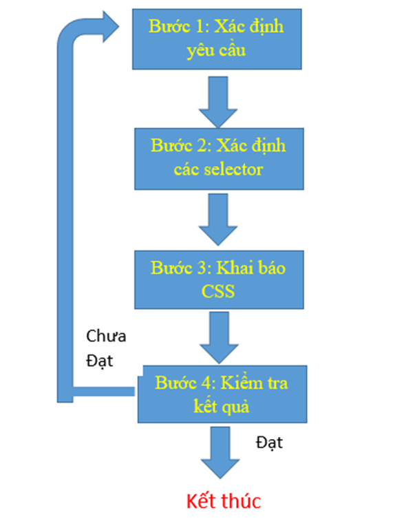
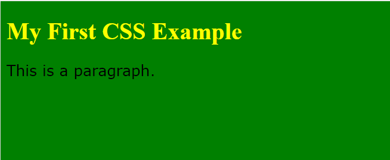
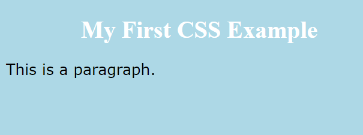

Tổng quan về CSS (Kết hợp CSS vào trang HTML)
Mục tiêu
Kiến thức:
Trình bày được các bước kết hợp CSS vào trang HTML dựa theo mẫu và tập tin HTML cho trước.
Kỹ năng:
Thực hiện được các bước kết hợp CSS vào trang HTML dựa theo mẫu và tập tin HTML cho trước.
Năng lực tự chủ và trách nhiệm:
- Có ý thức tự giác, tính kỷ luật cao, tinh thần trách nhiệm trong học tập;
- Làm việc độc lập, làm việc nhóm;
- Đánh giá công việc của các sinh viên khác (đánh giá chéo).
Yêu cầu
Nội dung
Công việc: Kết hợp CSS vào trang HTML
Kết hợp CSS vào trang HTML dựa theo mẫu và tập tin HTML cho trước được thực hiện theo 4 bước:
- Bước 1: Xác định yêu cầu. Trong bước này, chúng ta sẽ dựa theo mẫu để phân tích những yêu cầu cụ thể và dựa theo nội dung HTML để củng cố lại các phân tích một cách chính xác nhất.
- Bước 2: Xác định các selector (bộ chọn). Có 4 loại selector (bộ chọn) cơ bản trong CSS (có thể tham khảo lại bài học tại mục [2] phần Tài liệu và website tham khảo), chọn loại selector nào phụ thuộc vào từng yêu cầu cụ thể. Trong bước này, chúng ta sẽ dựa theo những yêu cầu được phân tích từ bước 1 để chọn các selector (bộ chọn) từ tập tin HTML để sẵn sàng cho việc khai báo CSS.
- Bước 3: Khai báo CSS. Trong bước này, chúng ta sẽ khai báo CSS theo đúng cú pháp (có thể tham khảo lại bài học tại mục [2] phần Tài liệu và website tham khảo) với các selector đã chọn từ bước 2 và chọn các thuộc tính CSS dựa trên các yêu cầu đã phân tích từ bước 1.
- Bước 4: Kiểm tra kết quả. Chúng ta sẽ kiểm tra kết quả bằng cách kết hợp các khai báo CSS từ bước 3 vào nội dung HTML sẵn có để tạo giao diện trang web và so sánh giao diện này với mẫu được cung cấp. Nếu có sự khác biệt, trở lại bước 1. Có 3 hình thức kết hợp CSS vào trang HTML (có thể tham khảo lại bài học tại mục [2] phần Tài liệu và website tham khảo) và tiết học này chúng ta sẽ sử dụng thẻ <style>.
Thực thi các bước
Trong thực tế thiết kế website, quá trình thực hiện 4 bước trên được lặp đi lặp lại nhiều lần cho đến khi đạt (hay gần) đúng mẫu quy định như hình ảnh minh họa sau:

Ví dụ 1
Cho mẫu sau:

Và tập tin HTML có nội dung sau:
- Bước 1: Xác định yêu cầu từ mẫu
- Bước 2: Xác định các selector (bộ chọn) dựa theo yêu cầu Bước 1
- Bước 3: Khai báo CSS
- Bước 4: Kiểm tra kết quả
Thực thi các bước
Ví dụ 2
Cho mẫu sau:

Và tập tin HTML có nội dung sau:
- Bước 1: Xác định yêu cầu từ mẫu
- Bước 2: Xác định các selector (bộ chọn) dựa theo yêu cầu Bước 1
- Bước 3: Khai báo CSS
- Bước 4: Kiểm tra kết quả
Bài tập thực hành
Cho mẫu sau:

Và tập tin HTML có nội dung sau:
- Bước 1: Xác định yêu cầu từ mẫu
- Bước 2: Xác định các selector (bộ chọn) dựa theo yêu cầu Bước 1
- Bước 3: Khai báo CSS
- Bước 4: Kiểm tra kết quả
Thực thi các bước
Tài liệu và website tham khảo
[1] Ths Trần Ngọc Minh (2017). Giáo trình Thiết kế và quản trị website. Trường Cao đẳng Kỹ thuật Công nghệ Nha trang.
[2] https://ngocminhtran.com/2017/07/07/tong-quan-ve-css/
[3] https://www.w3schools.com/css/default.asp